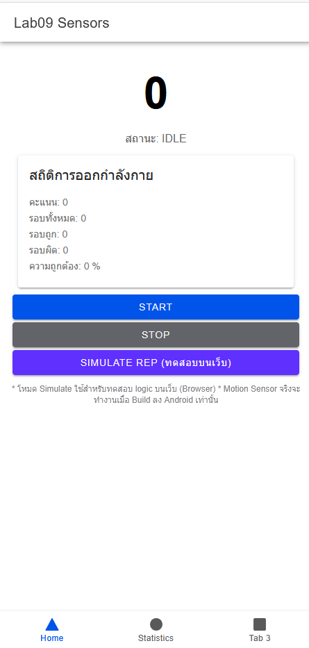
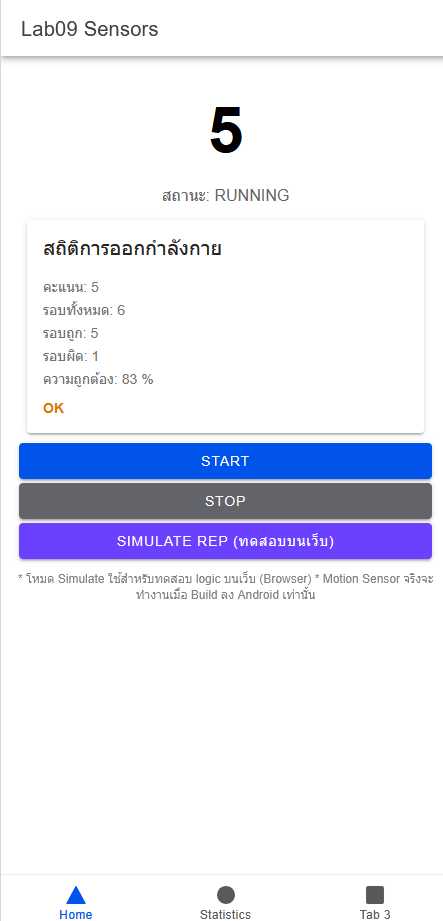
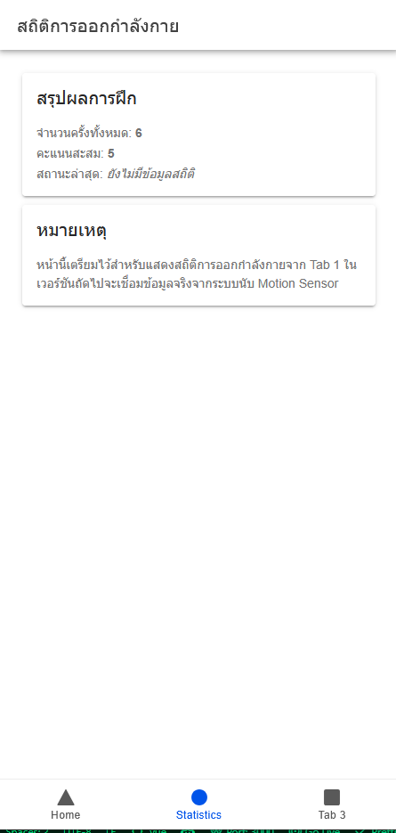
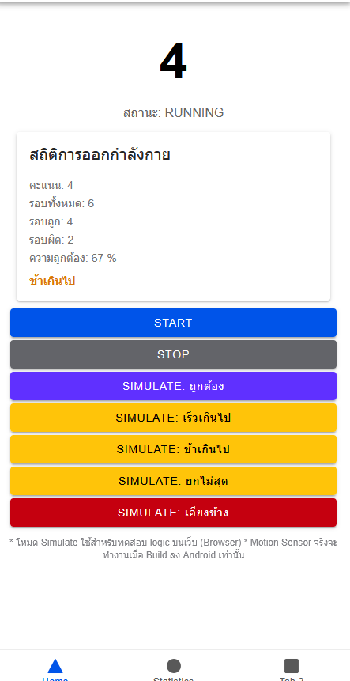
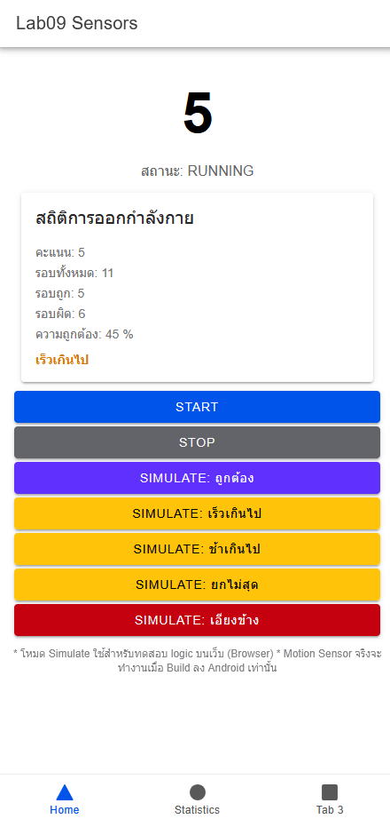
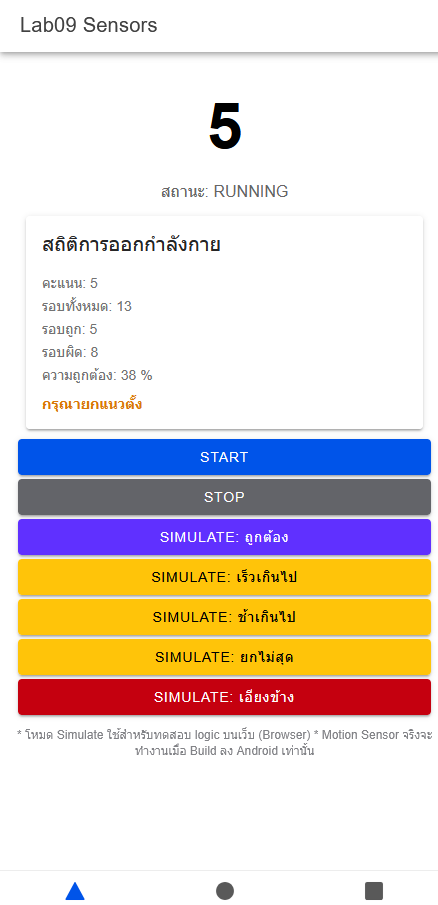

Lab09 Sensors
การทดสอบ Motion Sensor ด้วย Ionic + Capacitor
วัตถุประสงค์
- เรียนรู้การเข้าถึง Motion Sensor บนอุปกรณ์พกพา
- ทดสอบการนับจำนวนครั้งของการยกแขน (Repetition)
- ฝึกใช้งาน Capacitor Plugins (Motion, TTS, Haptics)
ตัวอย่างหน้าจอแอป (Screenshots)






สรุปการทำงาน
แอปใช้ Motion Sensor เพื่อตรวจจับการเคลื่อนไหวของแขน เมื่อผู้ใช้ยกแขนขึ้น-ลงครบหนึ่งรอบ ระบบจะนับเป็น 1 ครั้ง พร้อมแจ้งเตือนด้วยเสียง (Text-to-Speech) และการสั่น (Haptics)